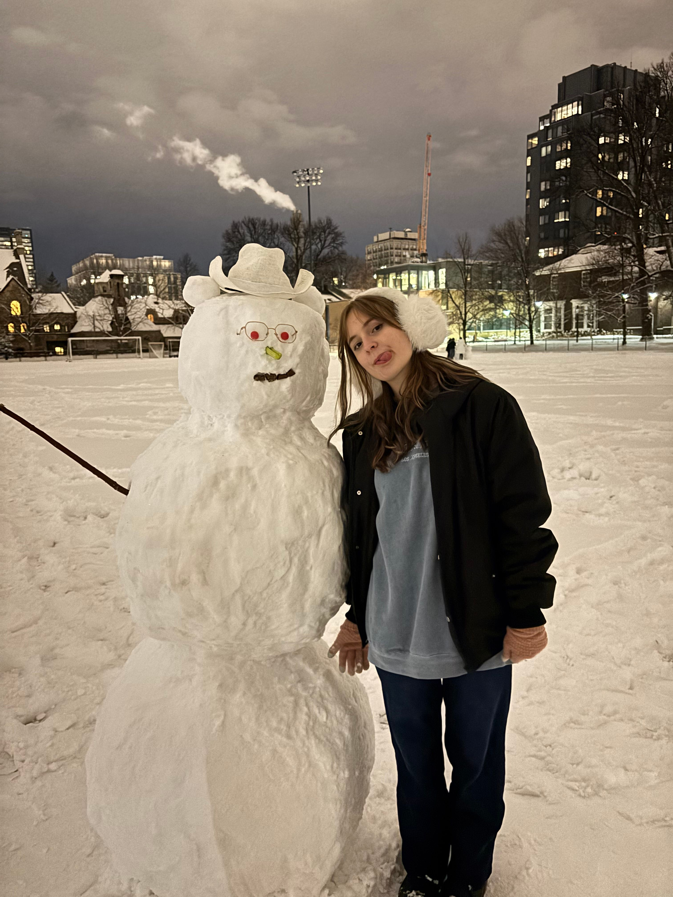
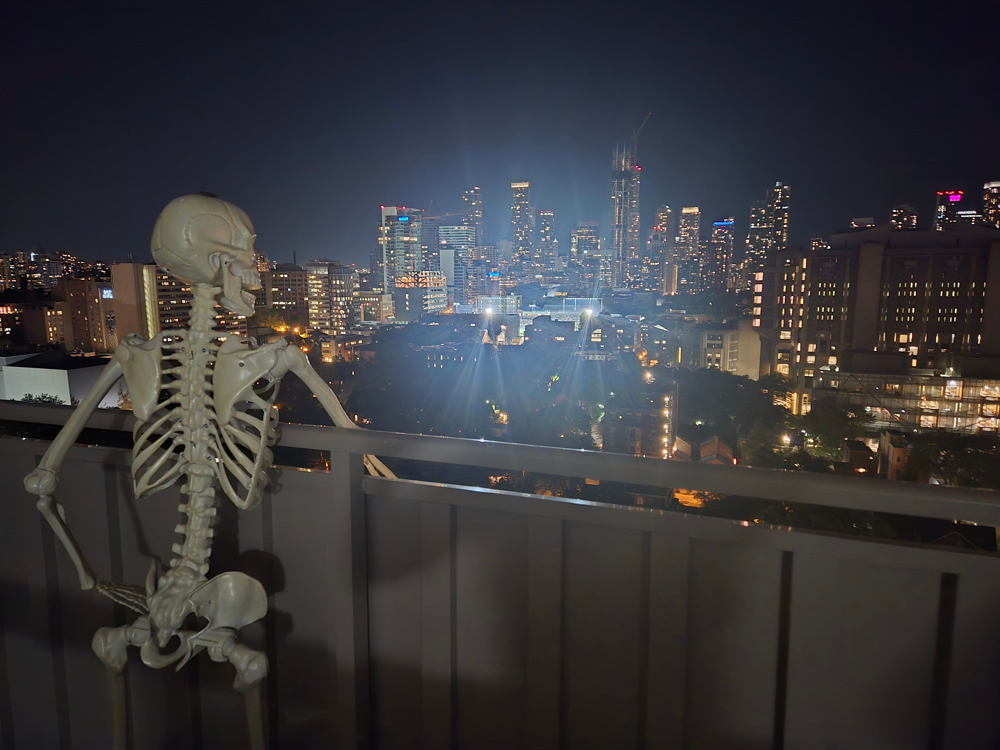
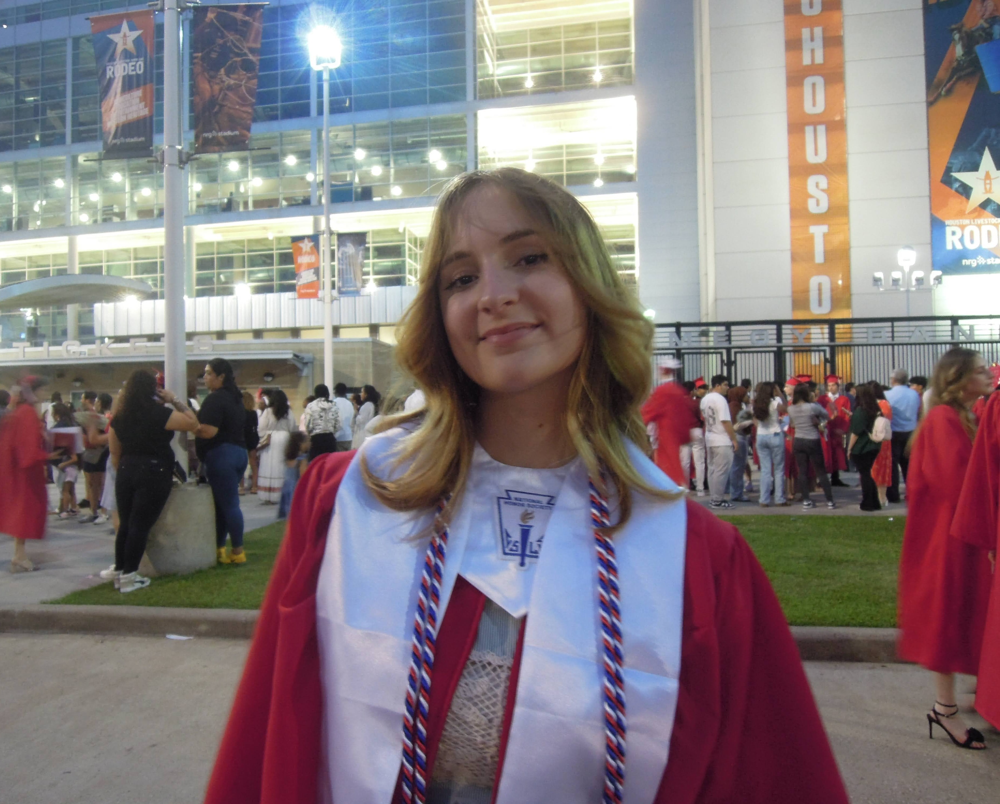
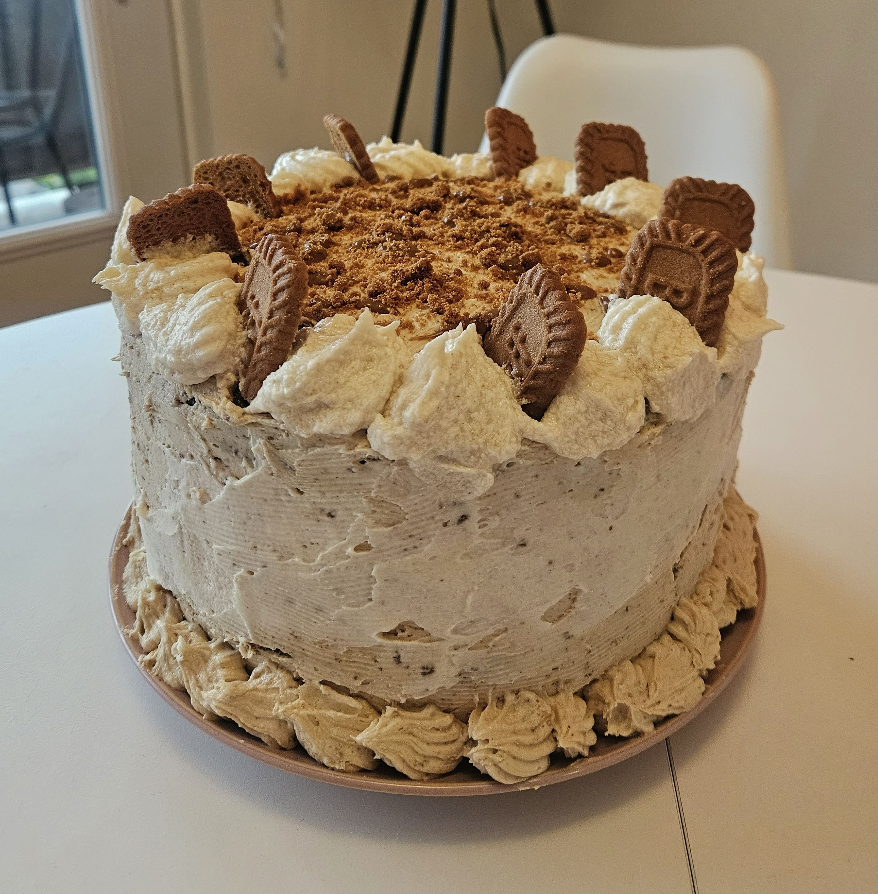
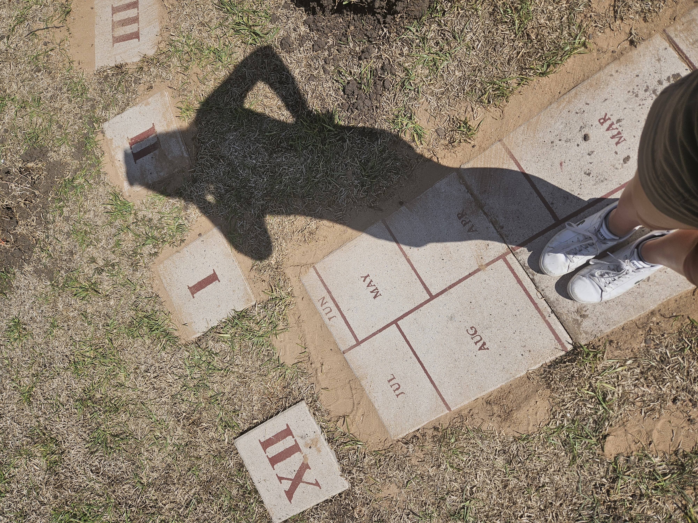
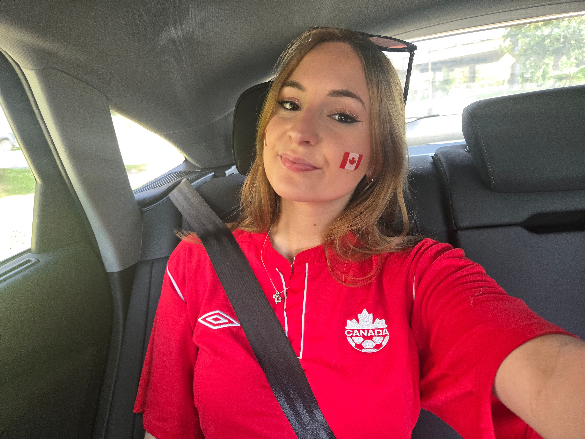

.gif)
About Me
Hi! My name's Vivian and I am a management student at Rotman Commerce at the University of Toronto. I'm originally from Houston, TX, but chose to move to Toronto to experience a new city and culture. I am passionate about marketing, data science, and social impact, and I am always looking for opportunities to learn and grow in these areas.
In High School, I joined the Boy Scouts of America and rose to the rank of Eagle Scout, which taught me the importance of leadership, teamwork, and community service. I learned many typical scouting skills as well as soft skills that have guided me through conflict resolution, project management, and public speaking. I also learned how to be a servant leader and mentor to others. In addition to scouting, I led clubs at my high school, was a member of the National Honor Society, and graduated in the top 10% of my 600+ student class.
From my sophomore year of high school to now, I have had numerous retail jobs at different companies, where I learned to work with a variety of people and develop my communication and problem-solving skills. I also learned how to work in a fast-paced environment and manage my time effectively. By far the most most important skills I learned from these jobs were how to work on a team and provide excellent customer service.
I am currently a 3rd year student at the University of Toronto, where I am pursuing a degree in commerce with a focus on marketing and data science. I have taken courses in marketing, statistics, and data analysis, and have gained experience in using tools such as Excel, R, and Python. I am also involved in various extracurricular activities, including the Rotman Commerce Human Resources Association and the Rocket Riders Student Transit Forum Club. Through these experiences, I have developed my skills in marketing strategy, data analysis, and teamwork.
Outside of school and work I love editing photos, graphics, and videos. I will find any excuse to create a poster for a group hangout, and test out new design elements that I've never used before. I have a soft spot for everything human geography and urban data analytics, and I love to understand urban systems and how they affect people's lives and choices. I enjoy exploring new cities and understanding their culture, urban design, and how the two are linked. I think data is very important in understanding any issue, from urban planning to marketing, and I try to find ways to use data in my daily projects and problems when possible. I also enjoy baking, and love to create a new recipe out of other recipes that I find.
I love dressing in vibrant colors, trying new spicy chicken sandwiches, and grew very fond of camping from my time in Boy Scouts. I love considering new ideas and perspectives and talking them over with my friends. And it's very important to me to have a 5 foot skeleton anywhere I live!





